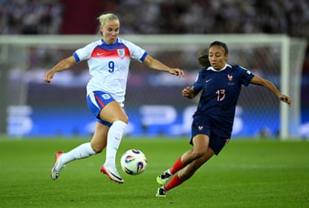

Vivianne Miedema has insisted she will “not be friends” with her partner Beth Mead on Wednesday as the Netherlands striker vowed to do everything in her power to send her team to the knockout stages of Euro 2025 and eliminate England.
The Manchester City striker has been in a relationship with the Arsenal forward Mead, her former Arsenal teammate, for three years and Miedema was probed repeatedly at Tuesasked yesterday’s press conference about the prospect of them facing each other in the pivotal Group D match. “If it’s not a nice moment for Beth, it’s not a problem for me,” Miedema said. “Tomorrow for once we will not be friends. I will do everything I can to win tomorrow. If I have to do something that is not good for Beth, then I will do it.
“I don’t think she’ll speak to me for a bit [if we win] but it’s tough. I also have some of my best friends on that [England] team. It’s part of football. It’s part of the game. I’ve probably been on the other end of it [more, losing]. I’ll be happy for us if we get through tomorrow.
“We both know what we’re going through. It’s a very important tournament. Our golden rule is we do not discuss anything [pre-match]. I don’t know whether she’ll be starting tomorrow or whether she’ll be on the bench. As a Dutch player I will do everything possible to win the game.”
Miedema, who scored her 100th senior international goal in a 3-0 win against Wales on Saturday, urged her Netherlands teammates to be wary of England’s threats, despite their opening 2-1 defeat against France : “They can turn up tomorrow and be absolutely unreal so we need to be ready.”
That was a sentiment echoed by the Netherlands head coach, Andries Jonker , who played down the significance of England having been beaten by France, saying: “In the first 20 minutes, England played very well. I’m a trainer, I look at the facts. Their second half was an even battle. The media [reaction] it’s quite dramatic. That’s not my cup of tea. But in the first 20 minutes, I saw a really good England team.”
England ideally need a victory to revive the defence of their European title, and the Lionesses know that – if they lose – they would be eliminated later on Wednesday night unless Wales defeat France. But their head coach, Sarina Wiegman, appeared to be embracing the pressure, saying: “Playing at this level makes it special. Playing matches like these makes it special. This is why we are doing it. These are the best matches you can possibly dream of.
Vivianne Miedema’s partner, Beth Mead (left), played in England’s opening defeat to France.Photograph: Matthias Hangst/Getty Images
“We knew before the tournament it would be a tough group. You want to win but we didn’t [against France]. Now we have another game and the approach is the same. We want to win the game.”
The Lionesses have not been eliminated in the group stages of any tournament since 2013 and Wiegman has reached four consecutive major tournament finals as a head coach, the first two of those coming with the Netherlands. Wiegman was also asked about the media reaction to her team’s opening defeat but said: “I don’t read the tabloids or the media. My only focus is on the team and what I have to do. Tomorrow we will start the game with the best possible gameplan and this is my only focus.”
The defeat against France on Saturday was the first time in a decade that England had failed to win a group-stage fixture at a women’s major tournament, since an opening defeat by the same opponent in the 2015 World Cup in Canada, when they progressed to the semi-finals nonetheless.
The Arsenal and England striker Alessia Russo said England are determined to put their defeat behind them immediately. “When you have a disappointing result in football, all you want to do is get back out on the pitch and play again, so luckily with tournaments it comes round a bit quicker than normal,” she said.
“Four days is plenty for us to want to be back out on that pitch. We’ve had a few great days of training and getting back to it as a team, so yeah, I think everyone is ready and looking forward to [the game].”